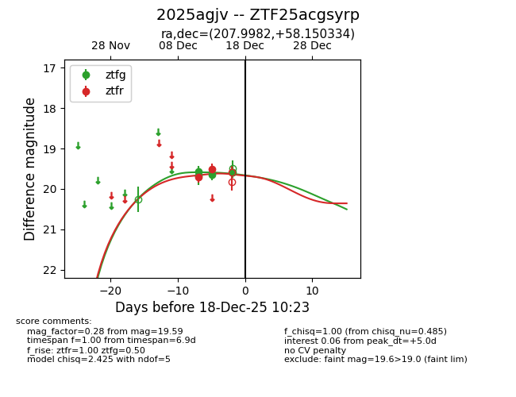
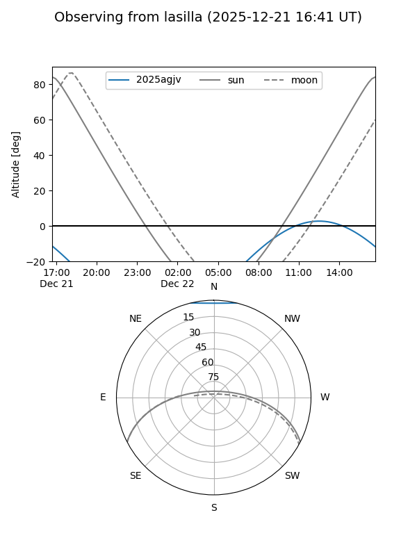
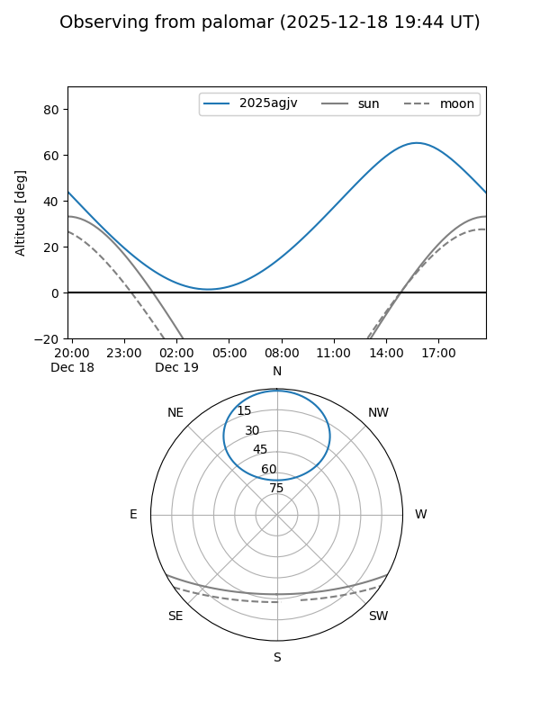
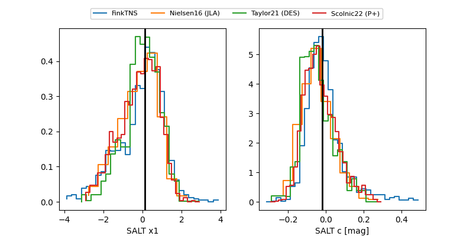

2025agjv
Target 2025agjv at 2025-12-21 14:07
Aliases and brokers:
FINK: fink-portal.org/ZTF25acgsyrp
Lasair: lasair-ztf.lsst.ac.uk/objects/ZTF25acgsyrp
ALeRCE: alerce.online/object/ZTF25acgsyrp
TNS: wis-tns.org/object/2025agjv
YSE: ziggy.ucolick.org/yse/transient_detail/2025agjv
alt names
ZTF25acgsyrp (ztf,fink_ztf)
2025agjv (tns,yse)
Coordinates:
equatorial (ra, dec) = 207.9982,+58.15033
equatorial (HMS+DMS) = 13:51:59.58,+58:09:01.20
galactic (l, b) = (108.1894,+57.21099)
Flags:
Photometry:
last ztfg=19.96, ztfr=19.71
6 ztfg, 5 ztfr detections
Lightcurve

Visibility


Additional plots
